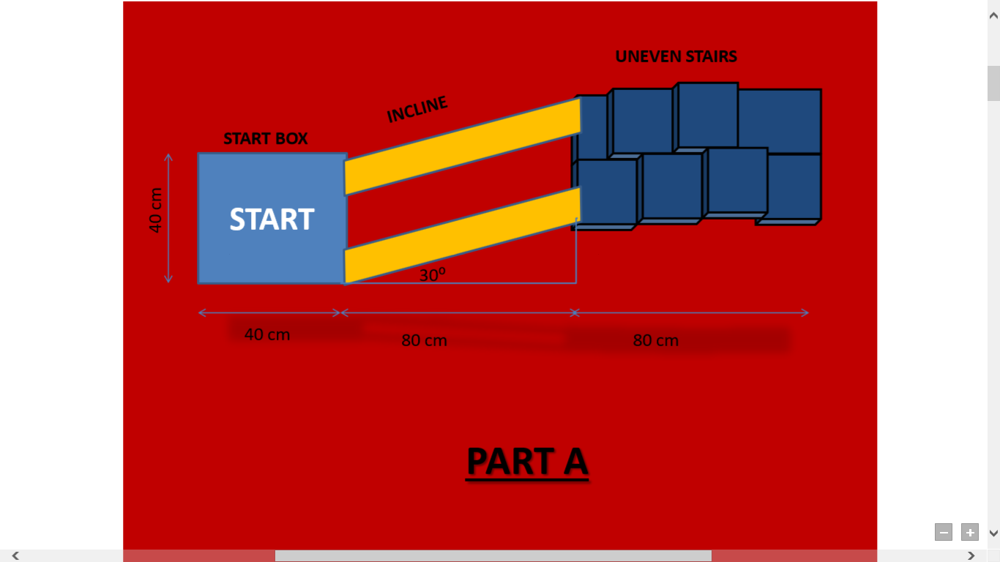
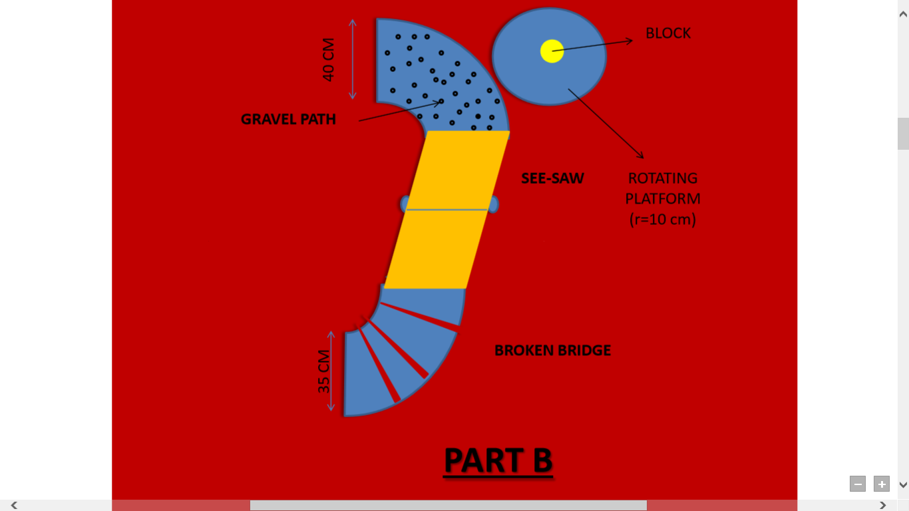
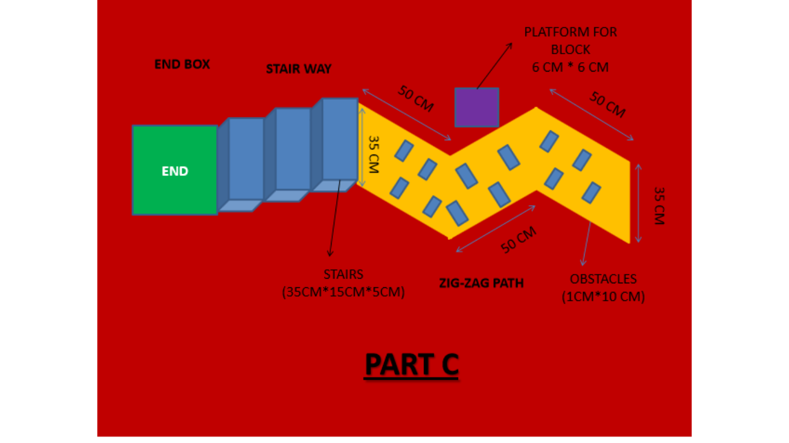
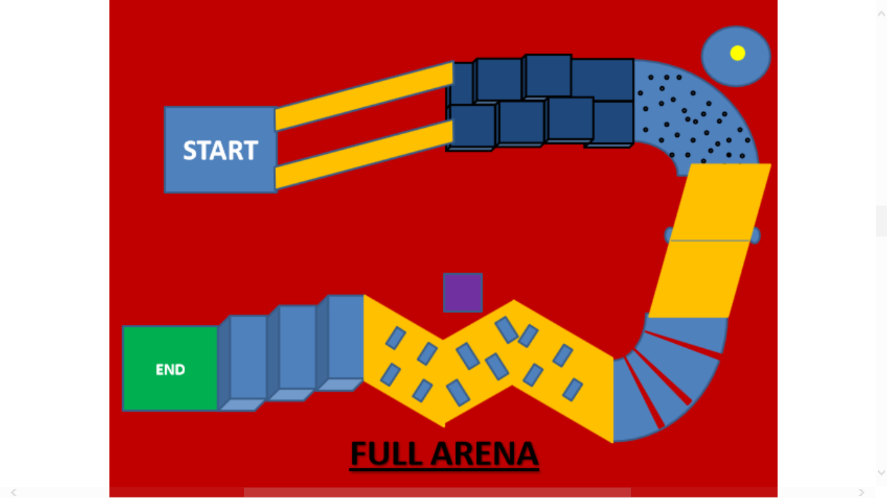

Introduction
The World War III is over leaving the world in utter chaos of radiation, disease and death. It’s time for the remaining humans and robots alike to come together and ensure their survival… In this semi-autonomous event, a manual bot is to make that can handle basic functions like pick-n-place and an autonomous bot capable of following certain rules. Survival can be summed up in three words- “JUST KEEP TRYING”.
Problem Statement
This is a semi-autonomous event. Here you have to construct a manual bot which can handle basic functions like traversing, pick-n-place and a simple autonomous bot capable of following certain specified rules.
The arena consists of 3 sections where the tasks are going to be performed.
This is the starting zone. Here you have to place your bot within a 40*40 square box and be ready to start the event. After that you will find an inclined path of 30 degree inclination. Steadily go up the incline. Next your bot have to be put through a set of some uneven stairs.

Upon completion of section 1 you will enter in section 2. Here you will find a path filled with gravel. A cylindrical block (of diameter 5 CM) will be there on a rotating platform right next to this gravel path. You just have to pick this block as an object and carry it with your bot. Next is a see-saw followed by a broken bridge as shown in the fig. 2.

After successful completion of section-2 your bot will reach section-3. There also some tasks are to be performed. The bot is subjected to go through a zig-zag path avoiding some small obstacles (dimension of 1 CM*10 CM). Right here you will find a platform (dimension of 6 CM* 6 CM) beside this zig-zag path for placing the block which you have picked up earlier & caring on. Put the block on the specified platform gently and earn your points. After the end of the zigzag path another stair-case is there having stairs of dimension 35 CM* 15CM* 5CM. steadily go down and reach your destination as shown in fig.3.

The complete view of the arena is as follows :

1. The dimensions of the body of the main bot and autonomous bot must not exceed 30 x 30 x 30 cm at the beginning, can extend to any length after starting.
2. The main bot should be controlled by a wired or wireless remote control throughout the turn. In case of wireless control, the bot must be able to work on two different frequencies.
3. Neither bots ,manual or autonomous bots, must not be made from lego parts or readymade assembly kits..
4. Damaging the arena will earn the team negative points.
5. Only an AC power supply of 220 V for either bots will provided at the event.
1. A team may have maximum of 4 members, not necessarily of the same institute.
2. Each team must be lead by one person, the captain, who shall attend to the call by the organizers whenever necessary.
3. Only one person is allowed to handle the remote control while the game is on.
Rules
1. As mentioned previous (for manual bot)
START-> SECTION 1 -> SECTION 2 -> SECTION 3 -> END
2 A team will be allowed to take maximum 2 Time-out for the case of Bot Fall, any technical support or as necessary. 15 points will be deducted for each time-out.
3. If a team has utilized both 2 time-outs but it again faces some difficulty in the bot or it may be the bot fall, then they can take a restart from the starting point. 30 points will be deducted in that case and all the objects will be put to their initial position. Keep in mind one and only a single restart will be entertained per team during the event.
4. The task of the autonomous bot will be revealed on spot during competition when after the team is successfully qualified for the second round.
1. INCLINED PATH- 15 points
2. UNEVEN STAIRS- 10 points
1. GRAVEL PATH- 15 points
2. SUCCESSFUL PICKING THE BLOCK- 20 points
(NOTICE: Successful picking of the block means at 1st attempt then +20 points, if it falls then -5 points with mentioned successful picking of the block at 2nd attempt then +15 points…..That’s all )
(NOTICE: Successful picking of the block means at 1st attempt then +20 points, if it falls then -5 points with mentioned successful picking of the block at 2nd attempt then +15 points…..That’s all )
3. SEE SAW PORTION- 10 points
4. BROKEN BRIDGE PORTION- 10 points
1. ZIG-ZAG PATH- 15 points
2. SUCCESSFUL PLACING THE BLOCK- 20 points
3. DOWNWORD STAIR WAY- 10 points
4. TIME OUT- 15 points
5. RESTART- 30 points
1. For section 1’s within 3 minutes - +( time left in minutes)x5 points.
2. For section 2’s within 5 minutes - +( time left in minutes)x5 points.
3. For section 1’s within 5 minutes - +( time left in minutes)x5 points
4. DAMAGING THE ARENA-10 for each damage done.
Time bonus will be accounted only after finishing the total task.
Time bonus will be accounted only after finishing the total task.
Prize
1. Certificate of Excellence will be provided to the participants who qualify for the FINALS.
2. Certificate of Participation will be provided to all the participants taking part in the event.
3. The teams which get disqualified due to disobeying any of the rules provided will not be entertained with any kind of certification.
Prize money worth: Rs. 16,000